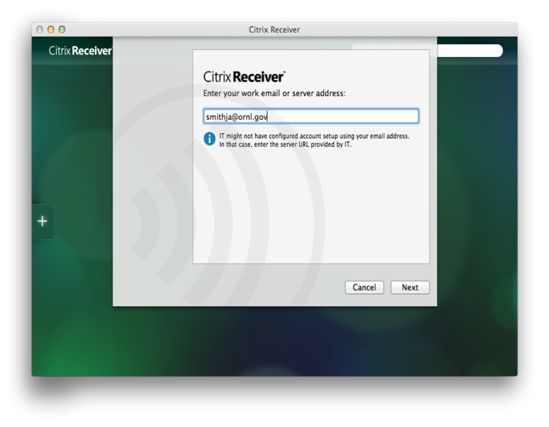
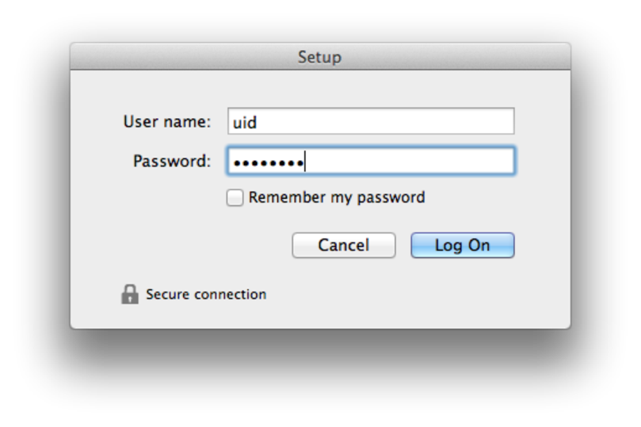
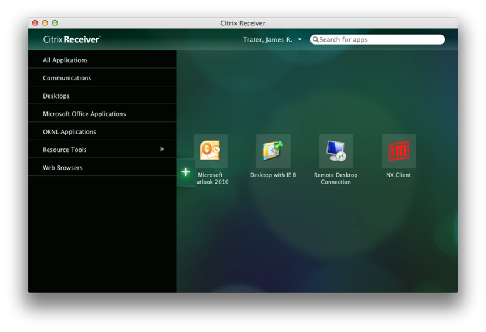
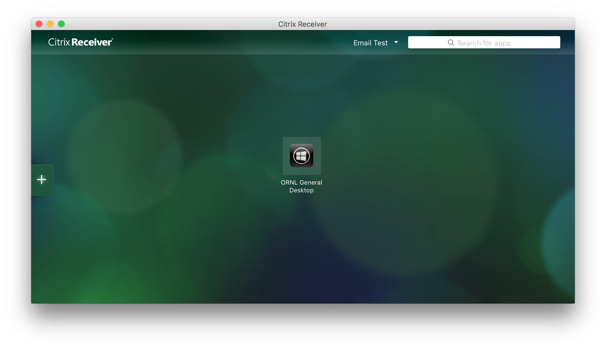
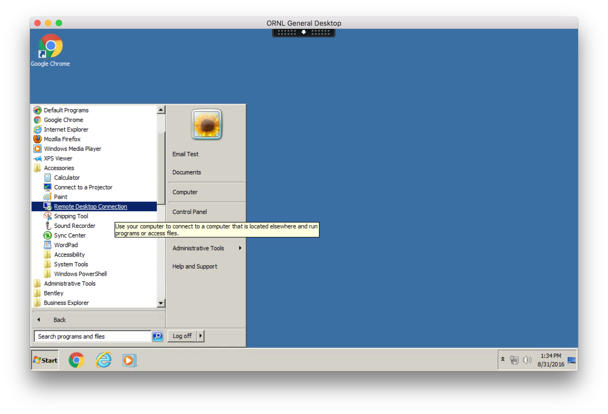
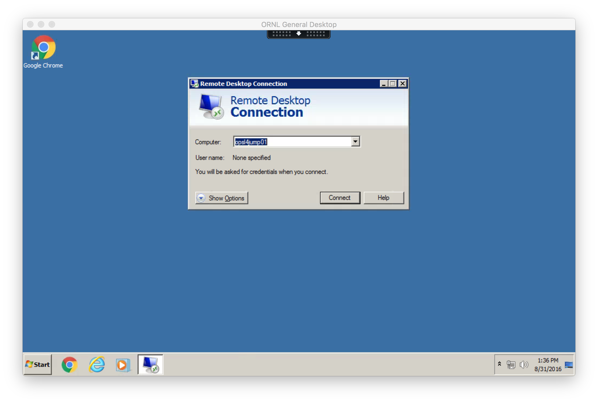
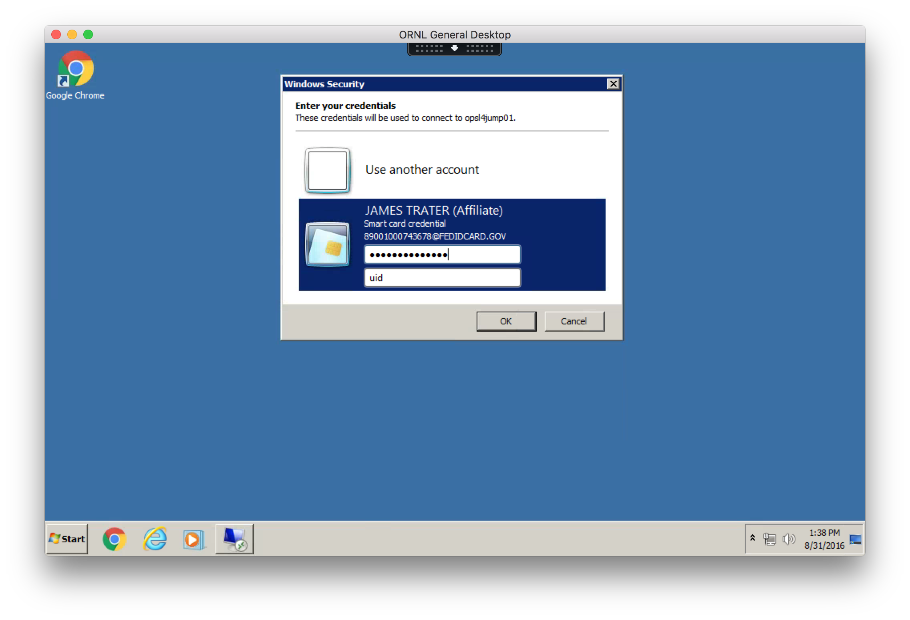

Client Prerequisites
- HSPD-12 or LSSO (site issued) SmartCard badge.
- You must know your PIN (this can be reset at the badging office).
- Supported SmartCard reader for your computer.
Launch Citrix Receiver
- Launch Applications -> Citrix Receiver
- The first time you launch Receiver you will be prompted for your e-mail address. Enter your ORNL e-mail address ( e.g. smithja@ornl.gov ) and click Next.

- Enter your 3 character UCAMS username and password when prompted.

- Click the plus ( + ) sign on the left side of the screen to add application launch icons to the receiver. Applications will also be added to your ~/Applications folder and can be launched from there without first opening receiver and can also be dragged to the Dock.

- Add a launcher for ORNL General Desktop found under All Applications.
- Verify that your SmartCard is in the reader before launching the desktop session within Citrix.
- Launch ORNL General Desktop.

- Launch Remote Desktop Connection found in Programs -> Accessories.

- Enter the hostname for the jump server you wish to connect to.

- Enter your SmartCard PIN and jump server username.
